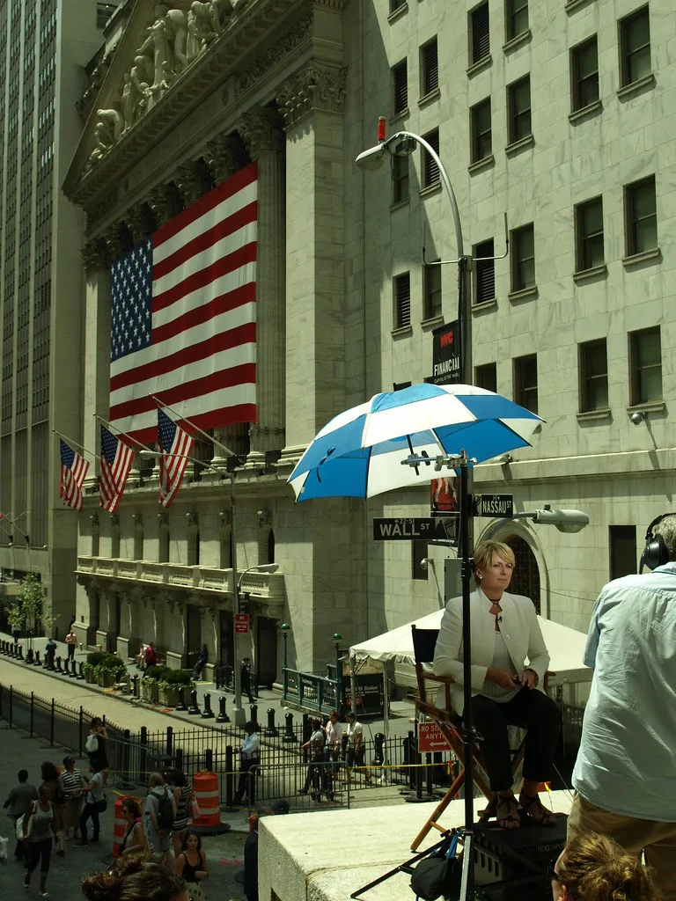

코스피, 반도체 강세 속 6438선 개장…외국인 순매수 유입
12일 코스피 지수가 전 거래일 대비 92.97포인트(1.47%) 오른 6438.50으로 장을 열었다. 개장과 동시에 지수가 큰 폭으로 뛰어오르면서 코스피는 이날도 사상 최고 수준의 지수대를 이어가는 모습을 보였다. 외국인 투자자의 매수세가 지수 상승을 이끄는 주요 동력으로 작용했으며, 장 초반부터 매수 우위 흐름이 뚜렷하게 나타났다. 최근 며칠간 이어진 대형주 중심의 상승 랠리가 이날도 그대로 이어지는 모습이었으며, 장 초반 거래량도 평소보다 눈에 띄게 늘어난 것으로 파악됐다.
이날 상승세를 이끈 주역은 단연 반도체 대형주였다. 삼성전자는 전일 대비 3000원(1.25%) 오른 24만2500원에, SK하이닉스는 2만6000원(1.82%) 오른 145만1000원에 각각 거래되며 강세를 보였다. 두 종목 모두 시가총액 상위권을 지키는 대장주인 만큼, 이들의 동반 상승이 지수 전체를 밀어 올리는 데 결정적인 역할을 한 것으로 풀이된다. 시가총액 상위 대형주들이 일제히 오름세를 나타내며 지수 상승폭을 키운 것도 눈에 띄는 대목이다.

이 같은 강세는 간밤 뉴욕증시 흐름과도 맞물려 있다. 뉴욕증시 자체는 다소 약세를 보였지만, 반도체 업종을 모아놓은 필라델피아 반도체지수는 상승세를 나타냈고 SK하이닉스의 미국주식예탁증서(ADR) 역시 강세를 보이면서 국내 투자심리 개선에 힘을 보탰다는 분석이다. 글로벌 반도체 업황에 대한 낙관적 시각이 국내외 증시에 동시에 반영되고 있는 셈이며, 밤사이 해외 지표를 확인한 국내 기관과 외국인 매수 주문이 장 초반부터 몰린 것으로 전해졌다.
다만 코스닥은 코스피와 다른 흐름을 보였다. 코스피가 2%대에 육박하는 강세로 출발한 반면, 코스닥은 1%대 약세로 장을 시작하며 대조적인 모습을 나타냈다. 대형 반도체주로 매수세가 집중되면서 상대적으로 중소형주 중심의 코스닥은 상승 탄력을 받지 못하는 이른바 '쏠림 장세'가 이어지고 있다는 평가도 나온다. 시장 참여자들 사이에서는 이 같은 대형주 쏠림이 당분간 계속될 것이라는 전망과 함께, 순환매를 통한 균형 회복 가능성에도 관심이 쏠리고 있다.

증권가에서는 메모리 반도체 가격 상승과 인공지능(AI) 서버 투자 확대에 따른 수요 증가가 반도체 대장주들의 실적 기대감을 계속 끌어올리고 있다고 설명한다. 글로벌 메모리 3사가 설비투자를 보수적으로 유지하는 가운데 공급 부족 우려가 이어지면서, 국내 반도체 기업들의 협상력이 한층 강화되고 있다는 시각도 힘을 얻고 있다. 일부 증권사는 이 같은 업황 개선 흐름이 하반기까지 이어질 가능성에 무게를 두고 목표주가를 잇달아 상향 조정하는 모습도 보이고 있다.
시장에서는 당분간 반도체 업종이 코스피 상승세를 견인하는 흐름이 이어질 것이라는 전망이 우세하다. 다만 특정 업종에 대한 쏠림이 심화될 경우 변동성이 커질 수 있다는 우려도 함께 제기된다. 전문가들은 개인 투자자들에게 지수 상승기일수록 업종별 분산 투자와 리스크 관리에 유의할 필요가 있다고 조언한다. 아울러 미국 연방준비제도의 통화정책 방향이나 글로벌 반도체 수요 변화 등 대외 변수도 여전히 지켜봐야 할 요인으로 꼽힌다.